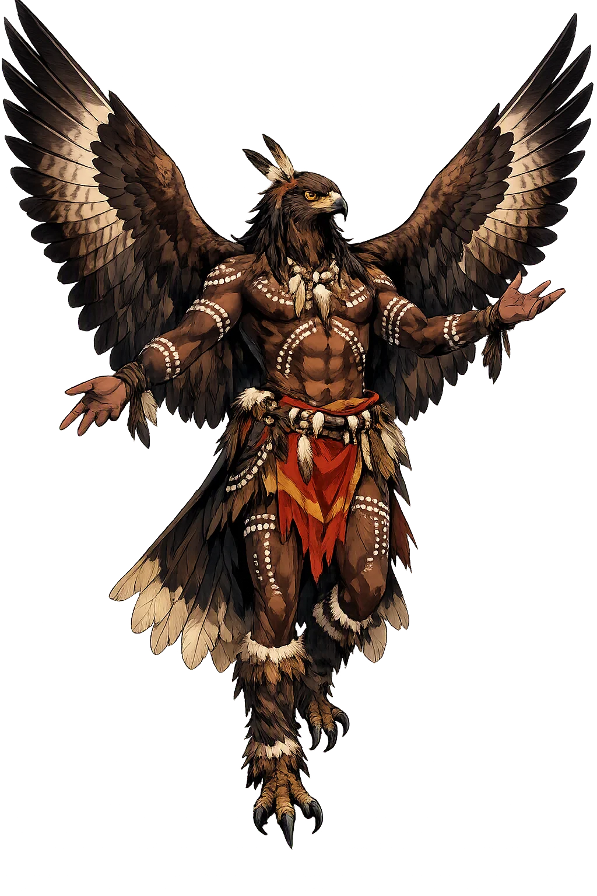
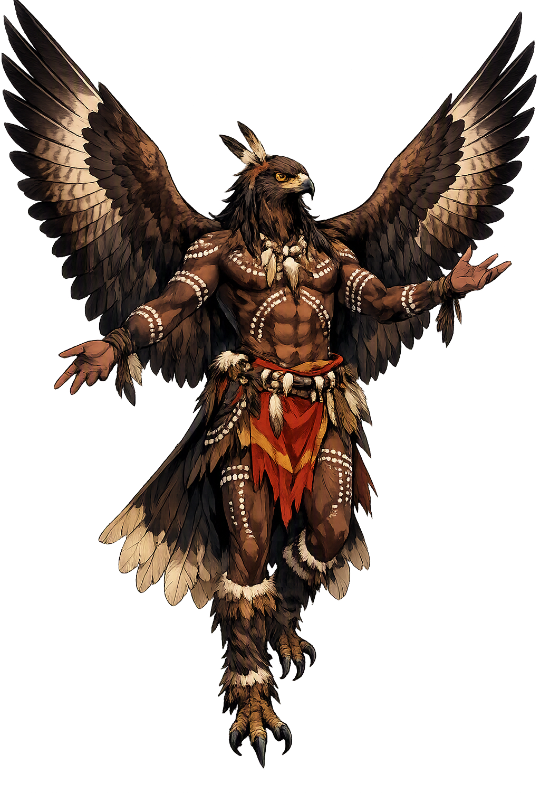

The Authentic Orthography
Creator Eaglehawk · The eaglehawk who shaped the southeast

Unicode restoration and ASCII comparison
Bunjil
The name survives in scholarly transliteration. Bunjil is the standard Aboriginal romanisation, documented in academic sources — “The eaglehawk”. Because the spelling uses only Latin letters, the form is the same in both ASCII and Unicode.
No indigenous writing system is securely attested for individual aboriginal names. The form shown is a modern scholarly transliteration.
bunjil
The plain bunjil form is identical to the Unicode restoration. Because this name is already written in Latin letters, no diacritics, stress, or script information were lost — only capitalization differs.
Bunjil
The Unicode restoration does not need to recover lost marks for Bunjil. Its value is canonical spelling and consistent cataloguing, not the reconstruction of erased orthography. The domain is readable as-is to both DNS and humanity.
Bunjil.com → bunjil.com
The non-ASCII characters in Bunjil are encoded while the ASCII remains visible. To the DNS, it is Punycode. To humanity, it is Bunjil.
How Bunjil is preserved in writing
No indigenous writing system is securely attested for individual aboriginal names. The form shown is a modern scholarly transliteration.
Contribute scholarly provenance →Owned, ideal, and ASCII forms of Bunjil
Bunjil
The full Unicode restoration. bunjil.com is not in the PuniCodex collection — it is watched for release; if it drops, this temple upgrades to an owned flagship.
How Bunjil was spoken
Sky Ancestor, Law-Giver, and Moiety Founder
Bunjil is the wedge-tailed eaglehawk made ancestor of the Kulin nations of central Victoria. In the Dreaming he shaped the mountains, rivers, plants, animals, and the laws by which people should live. He is one of two moiety ancestors, paired with Waang the crow, and after his work on earth he was lifted into the sky, where he remains as the star Altair.
He shaped the land, water, flora, and fauna of south-eastern Australia, and established the order of the living world.
After creation he ascended to the sky and became the star Altair; his two wives became the black swans beside him.
He gave the Kulin peoples their social and ecological laws, including the obligation to care for Country and each other.
As the eaglehawk ancestor he heads one of the Kulin moieties, balanced by Waang the crow on the other side.
Stories of Bunjil
Bunjil's stories belong to the Dreaming of the Kulin nations, especially the Woiwurrung, Boonwurrung, and Wathaurong peoples. They explain how Country was made, how law was given, and how the creator withdrew into the sky so that he might continue to watch over the world.
In the Dreaming, Bunjil travelled across what is now central Victoria. He formed the mountains, traced the rivers, named the plants and animals, and laid down the laws that govern how people relate to one another and to Country. These laws are not separate from the land; they are remembered in place names, songlines, and the seasonal responsibilities of each clan. (Massola 1968; Howitt 1904)
A Boonwurrung story tells of a time when the Kulin nations fell into conflict, neglecting family and Country. The sea rose in anger and threatened to flood the land. The people went to Bunjil and asked him to intervene. Bunjil agreed, but only if the people would change their ways and respect the law. He walked to the water's edge, raised his spear, and commanded the sea to stop. It did. (Briggs, 'Boon Wurrung Story')
When his work on earth was finished, Bunjil gathered his family and asked Waang, who kept the winds in skin bags, to release enough wind to carry them to the sky. Waang opened the whirlwind bag, and the wind lifted Bunjil and his people upward. Bunjil became the bright star Altair; his two wives, the black swans, became the stars on either side. Some accounts say he left this world from the island of Deen Maar. (Howitt 1904; Mudrooroo 1994)
In Gariwerd, the country now known as the Grampians, Bunjil took shelter in a cave in the Black Range. The rock-art site known as Bunjil's Shelter is one of the most important Aboriginal art places in Victoria and remains under the care of Traditional Owners. It is not merely a memory of the ancestor; it is a place where his presence is understood to remain. (Parks Victoria 2009)
Bunjil teaches that creation is not a single event but a continuing responsibility. He did not make the land and depart; he shaped it, gave it law, and then withdrew into the sky so that he could go on watching. The eaglehawk's eye is still understood to be turned toward Country.
Enter Extended Lore